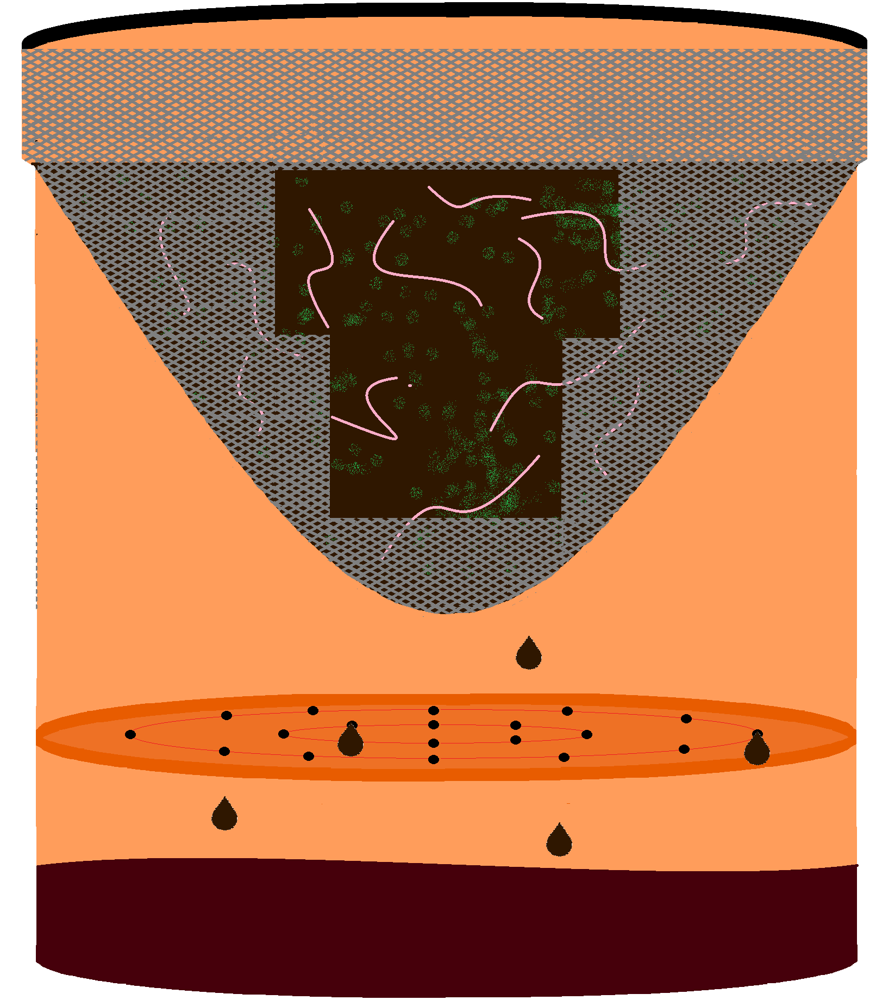

It's Easy to Make Your Own Worm Compost!
If you want to provide compost and fertilizer for your garden, you don't need a lot of space!
This simple design is cost and space efficient, and can be assembled quickly! It's great for
college students who want to learn the tips and tricks of living a more sustainable lifestyle
through gardening!
You will need the following supplies:
- 2 Plastic Buckets
- 1 Bucket Lid
- 1 Roll of Garden Nettting
- 1 spigot
- 1 8 Dry Qrt. Bag of Peat Moss
- Hot glue
- Cutting tools for the netting and buckets of your choosing
- Bulk Worms
- Your finest, 5-star food scraps
Instructions:
- Take a plastic bucket, and dig a series of holes on its bottom.
- Lay the netting over the top of the bucket. Place your hand on top of the netting to create a concave surface over the bucket. Place your hand far into the bucket so the netting covers the inside walls of the bucket.
- Cut the excess netting from around the bucket, but leave about an inch to cover the top of the outside walls. Apply hot glue to spots around the net.
- Take the second plastic bucket, and drill a hole toward the bottom on the side big enough for liquid to be released from your spigot.
Glue the spigot over the hole.
- Insert the bucket with the net into the bucket with the spigot attached
- Add peat moss and worms to the top bucket.
- Now the worms are ready for scraps!
Tap the bucket below to see what's inside!
